Nyaoming, a small Youtuber who also sells merchandise, requested to make some ads and business cards for her shop. I worked with her to find a style she was really happy with, which took many iterations before we got it ironed out.
The project deliverables:
- Ads for Social Media
- Business Cards
Gallery
Scroll to the right to see more!
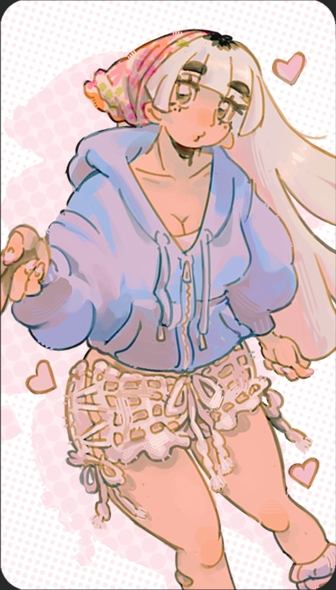
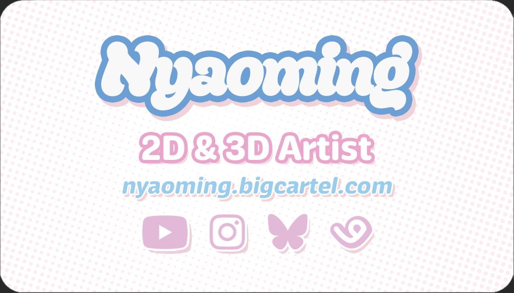
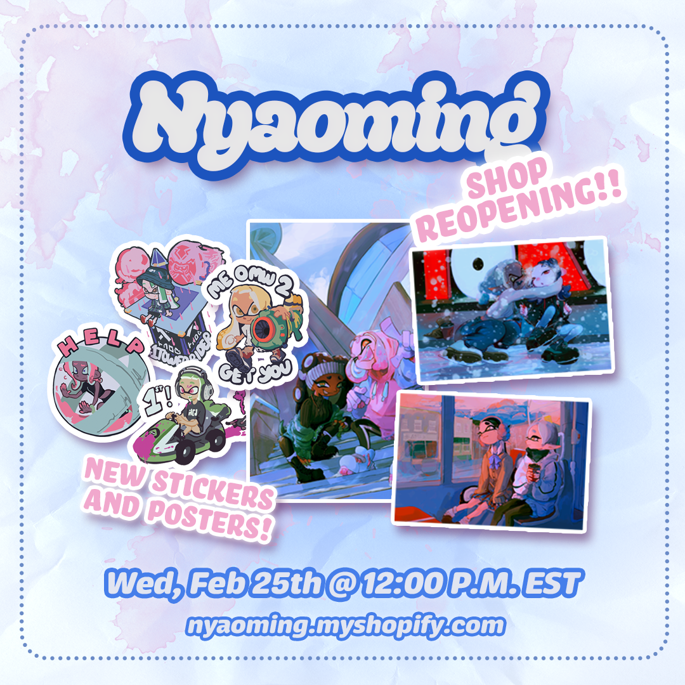

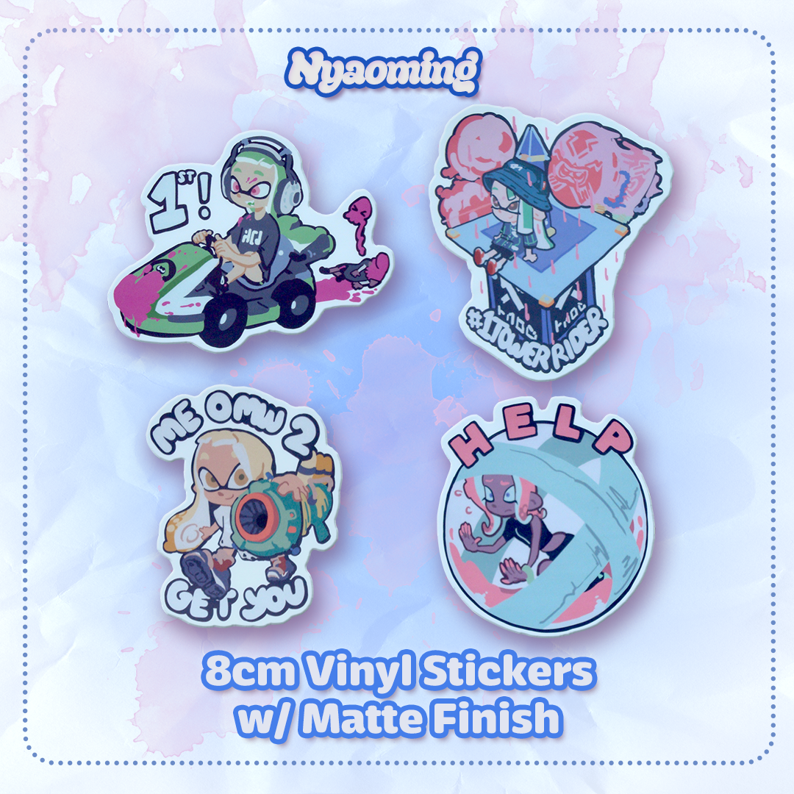
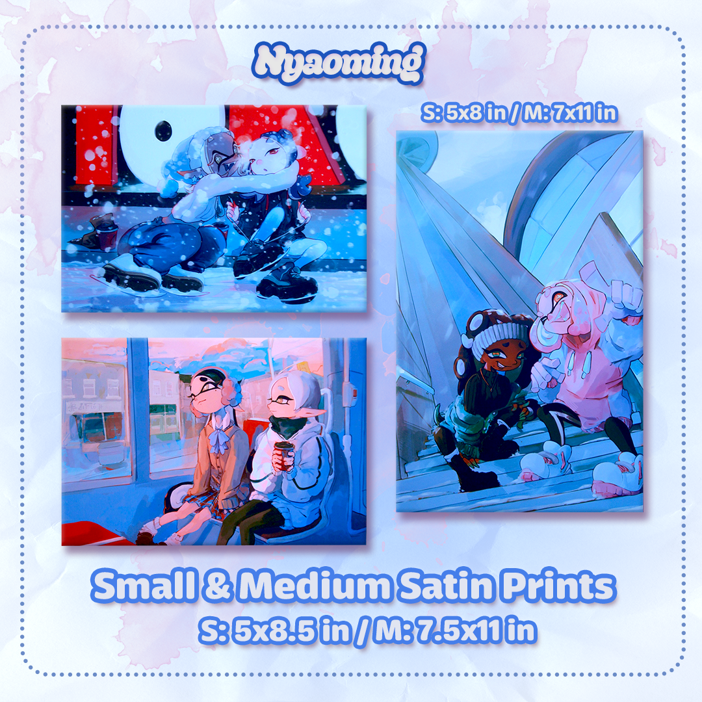
TAAFI is an organization that holds a conference every year for those in the animation industry. The conference features unique branding every year, so I had a lot of freedom to create something new that I felt fit the "TAAFI" image.
The collatoral I designed includes:
- Conference Information booklet
- Table About Pamphlet
- Badge Design
Gallery
Scroll to the right to see more!
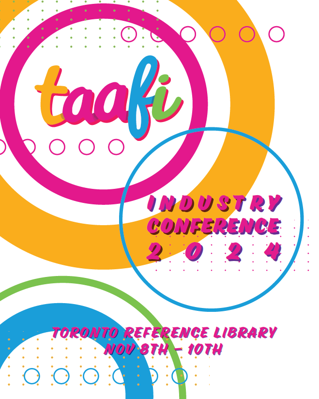

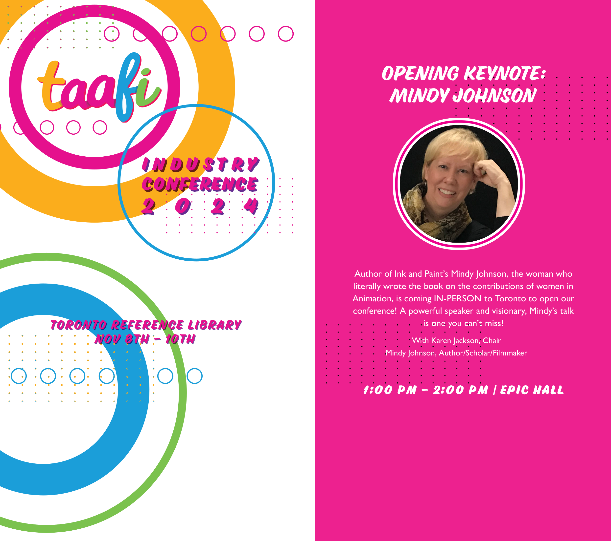
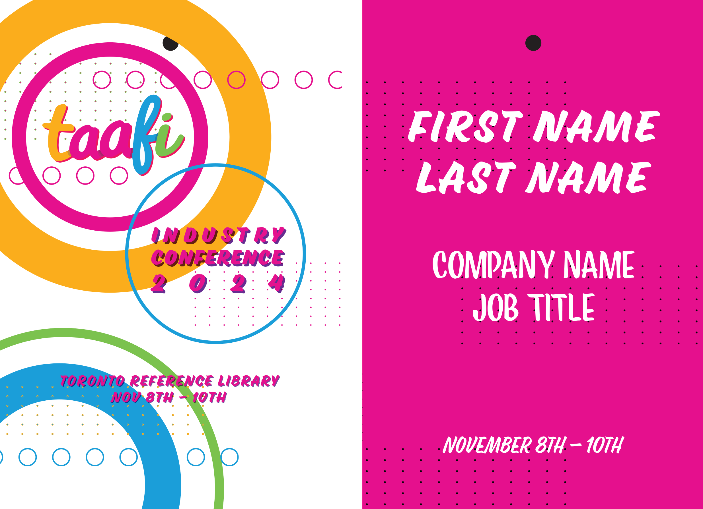
Dutch Bros. Coffee is a chain of drive thru coffee stands with a relaxed and chill vibe. I performed a usability study of their website during May 2024, which gave me insight into some navigation issues. I then did a very slight resdesign of the website that addressed these issues without being too much work.
Comparison
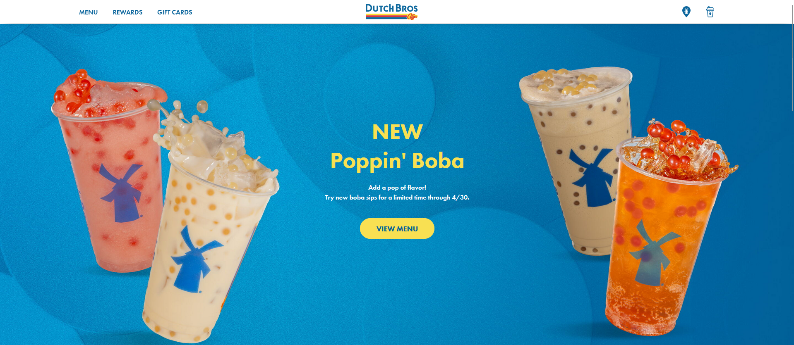

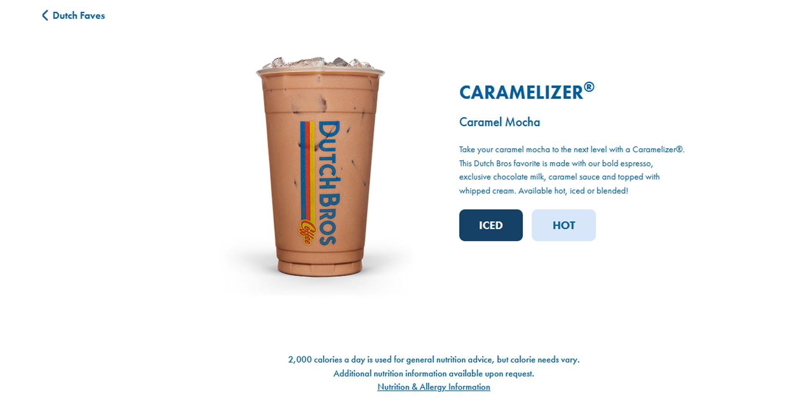
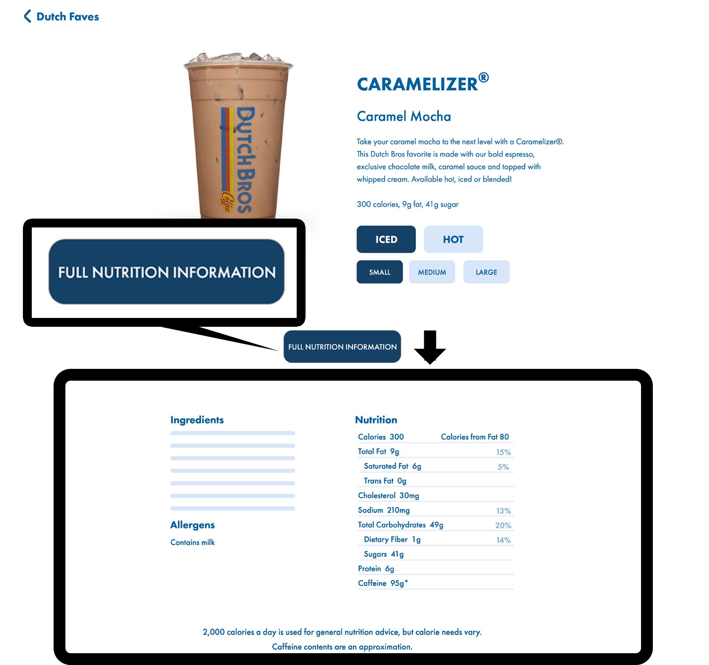